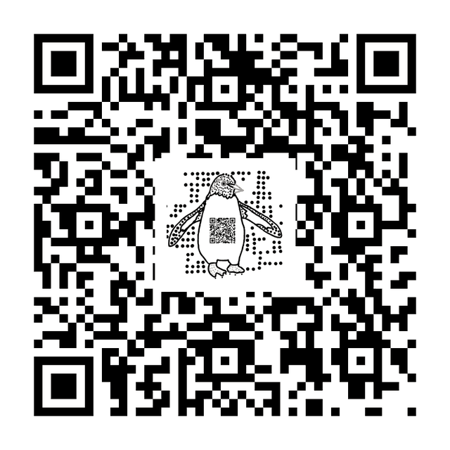

Workshop · floor model for Survey of Software 1.080.1

Six Python QR libraries all choose the same code, and every one reads back the same. So the interesting question isn't which encodes better — it's how far you can push the look before your phone stops reading it.
Scan the penguin. It points back at this page, so you can carry it to your phone and use the camera you actually own as the second opinion. The penguin is sitting on about a quarter of the code's width — drag the slider below and find out how much further it goes.
Plain language. Switch to Engineering for versions, byte counts and the measurements behind each claim.
The rule of this page: every figure below is measured on your machine while you wait, by the Python libraries themselves running in this tab. Where a number came from research instead, it says so in orange.
Press start to download CPython (WebAssembly). First time only, then cached.
Four separate libraries — written by different people, in different decades — encode whatever you typed above. Here is what each one produced. Look at them before reading on.
Encoder parity: qrcode, segno and qrcodegen
encode the same payload at the same error-correction level. Rendered side by side, then compared
module by module.
The code itself is fixed, so all the fun is in the drawing. Punch a hole through the middle and see how big you can get away with.
Centred occlusion sweep against error-correction level. Decoding verified live in-page; the reader's phone is the second instrument.
—
The surprise: turning the protection all the way up doesn't help. Try Q, then H — the code gets bigger instead of tougher.
Q→H buys nothing here. Both force version 4; the additional ECC codewords are consumed by the larger symbol, so contiguous-area tolerance is unchanged. The widely-repeated "30% of a QR code can be damaged" is codeword recovery capacity, not area occlusion — measured on this payload it is L 2%, M 4%, Q 11%, H 11%.
Same code, written out as a vector for a printing press. The file sizes are not close — but it depends which drawing method you ask for.
SVG byte counts, generated live. Three bars rather than two: the headline 16×
describes qrcode's default per-module emitter, and its SvgPathImage
factory closes most of that gap.
Not every barcode is a QR code. Same payload, other symbologies.
Pure-Python multi-symbology encoder: Data Matrix, PDF417, Aztec, Code128 and more, plus DXF output for engraving.
This one draws nothing at all. It hands you the grid and stops — which sounds useless until you need the identical encoder in Java, Rust and TypeScript too.
Matrix-only reference implementation, one source across Java/TS/Python/Rust/C++/C. 0.04 MB installed, zero dependencies, no renderer of any kind.
From research, not measured in this tab
zxing-cpp ships compiled binaries, so it cannot run in this page. Saying so beats simulating it, which would defeat the point of the whole workshop.
From the survey, measured on one machine (CPython 3.12.3, 1,000 iterations, matrix construction only): 0.189 ms per code — roughly 17× faster than any pure-Python option here. It is also the only library in the category that creates both Micro QR and rMQR, and the only one that reads codes as well as writing them. The survey has the workings.
Every other library on this page has somewhere it wins. This one doesn't, and that is the useful finding.
628,262 installs a month, and nothing shipped since June 2016. It is the slowest thing measured in the survey (10.264 ms per code), and segno does its entire job and more. If it is in your requirements file it arrived by inheritance rather than by choice — and swapping it for segno is close to a one-line change. Download counts in this category measure how dependency choices propagate through copied requirements files, not how often anyone chose.
Take everything you just worked out and hand it to whichever AI you use. This copies your settings, the limits you found by dragging, and working code for exactly this configuration.
Clipboard envelope — no vendor deep link, no API key, no dependency on anyone's roadmap. Paste into any assistant.
qrkadelic is a floor model for Survey of Software 1.080.1 — QR Code Generation Libraries, refreshed 2026-08-17. Libraries run under Pyodide (CPython compiled to WebAssembly) in this tab; nothing is sent anywhere. Measurements are from your machine except where marked orange.
Made by Ivan Schneider · Model Citizen Developer